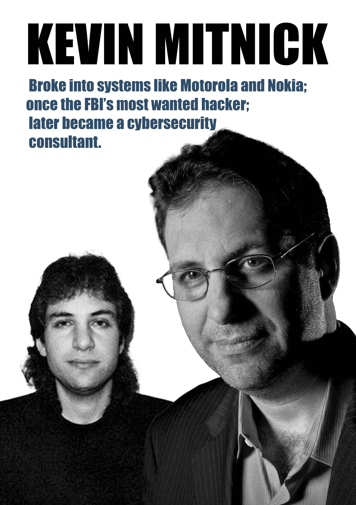

Kevin Mitnick

Once the most wanted cybercriminal in United States history, Kevin Mitnick became a global symbol for the "Human Element" of security. Unlike many who relied solely on code, Mitnick's primary tool was **Social Engineering**—the art of manipulating people into giving up confidential information.
"The human element is the weakest link. You can have the best technology in the world,
but if a person gives up their password, the technology is useless."
From Fugitive to Consultant
After serving time in prison, Mitnick pivoted to become one of the world's most respected security consultants, helping Fortune 500 companies and governments understand how to defend against the very techniques he once used.